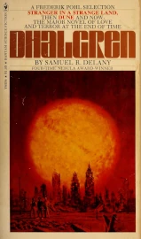

Dhalgren

by Samuel Delaney, 1975
It broke me. I need to take another run up to this. Advice welcome.
Update: Well, I did finish it eventually. It took me five months, and three attempts in the end, along with the reading of countless notes, critiques and analyses to keep my comprehension and engagement up. For my own sanity, I'm going to attempt a quick summary of the plot.
The main character, Kid, is not simply an unreliable narrator, but is actually delusional. Or he might be. His sanity remains unknowable. The city of Bellona's physical environment is deadly unpredictable, laws of cause and effect no longer apply, and the sense of chaotic unreality permeates everything. The social order is gone, as people wander from one encounter to the next, making friends or enemies or lovers on an hour-by-hour basis. Everyone is vulnerable to rape and death at the hands of the literally monstrous Scorpion gangs.
Kid discovers a notebook, containing unsettling entries which, glimpsed, are very similar to passages from the novel we are reading. Perhaps it is an alternate draft? These entries might, or might not be, Kid's own writings. He is unable to tell, as time loops and memory collapses. Regardless, he contributes further to the journal, and these entries are presented in duelling columns, as equal peers to the action, as alternate resolutions, entire different sequences of events, or metafictional commentary upon what "actually happened".
Kid is drawn into a Scorpion gang, at first reluctantly, but then rising to prominence amongst them for his crazy, heedless bravery. Mythological portents contribute to a sense of dread anticipation of a cyclic, apocalyptic frenzy, which subjectively comes about as Kid's mental condition - or the legibility of reality - deteriorates towards the novel's end.
The final words of the duelling channels presented by Kid's notebook end in mid-sentence, which is completed by the novel's opening, forming the promised cycle.
I'm not sure I'm up to drawing conclusions on top of that without lifting them wholesale from elsewhere.
Certainly I must admit that I found it hard work. It's difficult for me to discern what it is about this text which I found unrewarding, versus, say, books by David Mitchell like number9dream, which I loved. Perhaps in number9dream, I felt like I was in on the joke, because I was able to clearly identify distinct strands of metafiction and moments of unresolvable ambiguity, wherein one perspective might shift impossibly into another, but each instance of this is, with thought, separable from the rest of the novel.
Whereas Dhalgren has a denser tapestry of prickly ambiguity. No part or level of the fiction can be relied upon, from the largest of characterisations of the main character, to the tiniest of descriptive detail. All is in flux, misdirecting, unreliable, making a casual reading just confusing, while a careful reading is the same, but more so.
In reading around, I discovered that Delaney repeatedly spoke about Dhalgren as an attempt to convey his experiences living with dyslexia and dysmetria - an inability to perform co-ordinated bodily movement - together with his time on a mental ward during a breakdown, and his repeated episodes of seeing destroyed urban landscapes that nobody else could perceive. Because of this, part of me feels as though the novel might just be an exercise in confusion. An attempt to simulate the helplessness of mental illness by undermining all aspects which the reader might otherwise have felt they could rely on.
This does, in principle, seem like a worthy experiment - and I'm sure this is only part of what such a relentless, ambitious work is attempting. But on the other hand, it makes me think that some of the more positive reactions to Dhalgren might just be from readers who perceive, in the chaos, a grand meaningful structure that simply isn't really there. Throw enough noise at a filter, and the resulting output signal is not a function of the noise on the input, but is instead characterized entirely by the filter.
It seems ironic to me that perhaps the most vehement of the book's many detractors is Philip K. Dick, who described it as "trash". I would have said Dhalgren closely resembles the kind of profoundly unsettling departures from realism that came from Dick channeling his own mental illness. Evidently I'm wrong.
Evidently, I'm wrong.